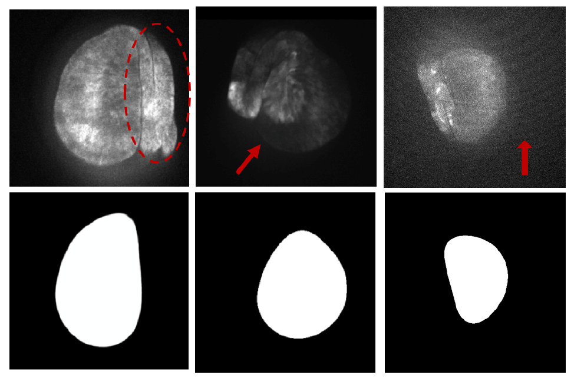

cyz_
Biomedical Image Registration

Note: Further details can be found in our original full length paper and our 4-page, condensced paper that was accepted by the 2018 IEEE International Sumposium on Biomedical Imaging (ISBI'18): [Full Length] [ISBI'18 Submission]
The Project
Introduction
From June to August in 2017, I worked as a deep learning researcher at the University of Notre Dame in Professor Danny Chen's lab. His lab specializes in research at the intersection of computer science and biomedicine. Their projects include medical imaging, automated medical treatment and diagnosis, group behaviors of organisms, and many other biological inquiries. During this time, my research used deep learning to register video frames that capture signal propagations through insect wing pouches (i.e. accurately align wing pouches across image sequences). My focus was on improving the semantic segmentation (important first step before the final registration step) of these wing pouches in noisy video frames. As a result, my descriptions below will focus on the segmentation portion of the project.
Problem Significance & Description
Our dataset consisted of multiple videos of signals propogating through insect wings. Our task was to create a system that automatically registered the wing pouches in each video frame to the wing pouch in the initial video frame. Why segment and register insect wing pouches? The wing disc pouches of insects like fruit flies are used as powerful genetic models. By studying signal propagations (calcium signals in our case) through these pouches, we can gain valuable information for disease studies, organ development, and other biological functions. You can see an example of a video in our training set (slowed down) in the first GIF.
Segmenting from live imaging proved to be difficult. As you can see, there is considerable intensity noise both from signalling dynamics and the environment. Movement and shape distortions are also an issue. This is one of the more tame examples where we didn't have to deal with severe non-linear deformations of wing shape.
To further give insight on the difficulty of the problem, let's take a look at some frames from various videos that are considered hard cases in the second image. In each column, the top image is the raw wing pouch frame and the bottom is the ground truth segmentation.
Left Column - Starting from the left-most column, we can see that surrounding tissue invites further problems. Tissue around the wing have virtually the same texture and intensity as our region of interest (the wing tissue). This makes it much harder for our segmentation network to distinguish which section of identical-looking tissue to label.
Middle Column - From the middle column, we can see that extreme intensity and shape variations exist within our dataset. Thus, a segmentation method depending solely on intensity will not be viable. The large shape variations also adds complexity as it prevents our model from simply remembering shapes to determine labels for wing-tissue.
Right Column - Finally, in the right-most column, we can see the same intensity issue. In this case, the extraneous tissue on the left of the wing is actually brighter than our region of interest. Intensity noise from the background also brightens up the raw image considerably. We can also see that the boundary between wing discs and extra tissue is extremely suble and thin. All of these factors played big roles in my final network design.
My Contributions
As mentioned above, my contributions to this registration project focused on the semantic segmentation step. This part consists of 2 substeps: (1) the use of deep learning for automatic segmentation (2) the use of boundary refinement as a post-processing to further improve segmentation results.
Image Segmentation
Designing an effective architecture specific to this problem was the main difficulty in this step. Previous state-of-the-art segmentation architectures like CUMedNet and Global Convolutional Networks performed very poorly on our dataset due to the problems mentioned in the previous section. Popular classification architectures like ResNet, GoogleNet, and variations of these weren't effective either. Our network had to capture big contextual features in order to accurately segment the entire wing while also incorporating fine details for accurate pixel-wise segmentation of wing boundaries. To achieve this, the backbone of the convolutional network consisted of blocks connected by residual links that gradually increased receptive field. Feature maps of each receptive field size would be fed and combined into up-convolutions for the final segmentation. The final fully convolutional network architecture that significantly out-performed previous state-of-the-art architectures looked like this:
Boundary Refinement (BR)
Although segmentation results have dramatically improved, some boundaries were still rough and inaccurate. As a result, a bondary refinement process was necessary. Taking advantage of wing pouch convexity, the boundary refinement problem was reinterpreted as a graph search optimization problem using a cost function that rewards smooth, convex boundaries over rough ones. I wanted boundary refinement to re-incorporate the neglected areas within the wing pouch caused by intensity fluctuations or noise. To do this, a degree cost penalty was added to the cost function to balloon out these regions. Designing and testing appropriate cost functions yielded improved segmentation results. Below is an example of the impact boundary refinement made in a training example:
Results
My final segmentation model design was able to successfully address all of the challenges mentioned above as well as leverage large receptive fields and fine detail with computational cost. Both in the segmentation portion and in our overall registration performance, we were able to achieve efficient, state-of-the-art results. Below is a comparison of our method with other methods:
Thank you for reading! Again, more information can be found in our papers (links at the top of the page).